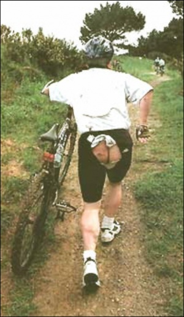

Pedo
 De: La Frikipedia, la enciclopedia extremadamente seria.
De: La Frikipedia, la enciclopedia extremadamente seria.
| De la serie Elementos químicos:
|
|
|
| Nombre oficial:
|
Pedo
|
| Otros nombres:
|
Peo, flatulencia, tufillo, ventosidad, gas letal, la mierda gaseosa, el tordo invisible, el aliento de la comadreja...
|
| Serie alquímica:
|
Gases nobles
|
| Descubridor:
|
El primer hombre.
|
| Color en tabla:
|
#C0A000 ó #CACA00 ó #FECA00
|
| Presente en:
|
Tu cara, el culo, el estómago, la atmósfera, las burbujas de la Coca-Cola, el oxígeno de las bombonas de oxígeno, los globos de Helio...
|
| Usos:
|
Molestar en el ascensor, hecharse unas risas, vaciar la bolsa estomacal...
|
| Estado:
|
En estado sólido y líquido se denomina Caca, por lo que es estado sólido.
|
| Peso kg/puñao:
|
No se puede pesar, se puede oler.
|
| Estructura:
|
Abstracta, salvo los pedos de IP anónima que son sólidos.
|
| Abstracción:
|
Total.
|
| Humungoso:
|
Siempre, signifique lo que signifique.
|
 A este ciclista se le paso un pedo
El pedo, también llamado Flato, del latín Flatus y por veces conocido como gas sublime en el caso de que el individuo se excite tras liberar un pedo o las ventosidades de Barney Stinson.
Definiciones
Aire oloroso gaseoso gracioso, que resulta manjar extremo cuando es propio y extremamente repulsivo cuando es de tu primo.
Es la parte constitutiva de la nebulosa de la materia original. Para entender esta definición debería ser capaz de jugar al Mario Bross y escuchaar a los Jonas Brothers sin comenzar a combulsionar y echar espuma por la boca una persona notablemente cultivada y entendida en la materia y como IP anónima es imbécil no todo el mundo tiene estas características ofrecemos otra definición:
Es un compuesto de gases altamente variable, un ente que por su etérea naturaleza no se puede definir, como el arte o el sexo de Falete. Al igual que el arte proviene de lo más profundo de nuestro ser
Se cree que no posee gluten.
Otros significados
Pedo es uno de los términos con más acepciones de la lengua castellana, siendo aún más llamativo en el caso de los argentinismos.
- Como pedo se conoce al estado de embriaguez resultante de la ingesta de bebidas alcohólicas u otras sustancias psicotrópicas en exceso. Comúnmente un individuo que atraviesa por esta situación puede llegar a decir (con las fuerzas que tenga) "Estoy en pedo". Este tipo de pedo es asimismo el estado natural y habitual de conciencia de algunas personas o seres humanos que no han sido víctimas de la ingesta excesiva de alcohol, sino que simplemente así viven.
- En algunos países, sólo se refiere a una persona drogada con drogas que drogan... "Estoy pedo", "Estoy elevado/drogado/alucinado/fumado".
- También es muy común utilizar este término para describir la situación de ocio extremo por la que se atraviesa, exclamando "Que al pedo que estoy!" queriendo decir que no tiene nada para hacer en la vida y que se dedica a la vagancia.
- De esta misma manera, al querer decir que algo fue hecho inútilmente se puede llegar a decir "Lo hicimos al pedo" o "fuimos al pedo", refiriéndose a que fue en vano.
- Cuando se obtiene un logro en el cual es evidente que la fortuna posó su mano sobre el victorioso, se suele decir "Ganó de puro pedo", significando que fue una suerte que llegara a tal o cual situación. De esta misma forma también se puede decir "Y nos encontramos de pedo" queriendo demostrar que fue una casualidad increíble que dicho suceso se diera.
- Se usa en situaciones complejas, como al decir "Es todo un pedo" se refiere a: "Es todo un caso", "Es un gran problema/embrollo".
- Para saludar: "¿Que pedo?" quiere decir: "¿Que hay?" "¿Cómo te va?".
- Para preguntar: "¿Que pedo con tu novia?" quiere decir: "¿Que hay con tu novia?". "¿Y esta página que pedo?" "¿Y esta página de qué trata/ de qué va?".
- Hablando de cuestiones relativas a la velocidad, es muy común escuchar que se diga "Ese taxista nos trajo a los pedos!" queriendo decir que la velocidad era muy elevada.
- Se utiliza también con la negatividad. Si se dice "Ni en pedo!" significa que se está negando a hacer/decir tal o cual cosa. Pero está íntimamente relacionado con el uso de la palabra Pedo en la borrachera, queriendo en realidad significar "ni borracho haría algo así!".
- Es también muy común escuchar que un argentino diga "anoche mi mamá me re cagó a pedos". La frase "cagar a pedos" está íntegramente ligada a la reprimenda, al reto. Lo que sugiere es que ha recibido un fuerte reto.
Creación del Pedo
Los pedos en realidad fueron creados por Dios después de la batalla final con Psyduck en el Episodio 3 (La guerra de los patitos dulces, o sea QUACKS), de tanta energía que tiene Dios que debía de salir de algún lado.
Desintegración de los pedos
Como es conocido, toda criatura creada por Dios es ridícula y efímera, por tanto tiene un final. El pedo no iba a ser menos. Quizás pienses que los pedos se mueren y van al cielo.
No, analfabeto de mierda querido amigo un poco despistado, ¡cómo va a ir un pedo al cielo! Y tampoco pienses que va al infierno por muy lógico que creas que esta teoría pueda tener basandote en la condena que supone el infierno.
No, los pedos que son liberados flotan hasta llegar a la capa de ozono donde se desintegran mediante una implosión que aumenta el agujero que hay en la misma. Obviamente, a esto se debe que los pedos de las vacas y King África sean los principales causantes del agujero de la capa de ozono.
Pero los pedos que la gente se aguanta tanto que finalmente acaban por desaparecer misteriosamente, simplemente vuelven a los intestinos y salen más tarde. Esta es la famosa teoría de que los peos no se pierden ni se destruyen, sino que se retrasan.
Química del pedo
Diversos científicos con mucho tiempo libre en un acto temerario de valemadrismo, arriesgaron su vida con la posibilidad de morir asfixiados para poder resolver una de las cuestiones existenciales que más han carcomido la conciencia humana desde el comienzo de los días: ¿De qué está compuesto un Pedo?
Actualmente sigue sin existir una fórmula química específica para el pedo, debido a la ingente caantidad de elementos involucrados en la secreción flatular ni zorra idea de que es lo que acabo de escribir.
Aún así, numerosos elementos son conocidos.
El principal es el azufre que, como nos ha enseñado la película Shrek, es el que le da el olor.
También intervienen otros como el Nitrógeno y el Dióxido de Carbono (se encuentran en mayor proporción), estes son los gases resultantes de las reacciones químicas entre los ácidos estomacales, fluidos intestinales y flora microbiana. Cuando todos estos elementos se juntan con parte del aire que respiramos se produce un considerable aumento del volumen y la mezcla intenta huir por donde sea.
El intenso mal olor proviene de trazas de otros constituyentes producidos por la ruptura de proteínas:
- Ácido butírico (olor a mantequilla rancia)
- Compuestos del azufre
- Sulfuro de hidrógeno (olor a huevos podridos)
- Disulfuro de carbono.
- Todas tus bacterias.
Alimentos como la cebolla, coliflor, huevos, son notables por producir pedos apestosos. Los frijoles y todo tipo de granos, producen grandes cantidades de pedos,
aunque no necesariamente hediondos.
Física y acústica del pedo
Cuando en un cuerpo se atesora una gran cantidad de gas, obviamente el pedo es sonorosísimo, pero si el abdomen casi no está inchado es posible que el gas sea expulsado por la boca, en este caso no se considera pedo, sino eructo
A pesar de que algunos frikipedistas mantengan que el eructo es un compuesto completamente diferente, el eructo proviene de la misma zona (estómago) y tiene una composición química similar (un poco más de aire atmosférico y menos gases de la flora microbiana) con menor potencia. Es por tanto aceptable toda bujarada epresión del tipo:
- "El eructo es un peo que tomó el ascensor".
- "Un eructo bien lanzado, según la opinión de Angulo, es un peo que, cansado, no pudo llegar al culo".
- "El peo es un eructo que te vio cara de culo".
- "El eructo es el grito de libertad de las cacas oprimidas.
Pero es otro tema. Toda la metralla que conforma el pedo finalmente es expelido a través del ano produciendo una armoniosa melodía en la mayoría de los casos. ¿De qué depende esta sonoridad?
Pues es independiente de lo que se ingiere, tiene que ver con la velocidad de escape y forma del culo del sujeto en estudio (la estrechez de la abertura de los músculos del esfínter anal), si se es muy nalgón las paredes de las nalgas vibran con mayor fuerza y esa vibracion produce el sonido, por lo que con ello es irrefutable el hecho de que a la gente gorda le truenan mas los pedos.
Fuego
Normalmente los peos incluyen Metano e Hidrógeno, ambos gases inflamables. Por eso es posible encender un peo, pero debes tener en cuenta que intentar la ignición de un peo puede ser peligrosa. La llama puede retroceder y tu ropa, o lo que estuviese cerca, puede prender fuego. Cerca del 25% de las personas que lo intentaron quemaron sus nalgas y los pelos de su culo. Y a pesar de que es un espectáculo inolvidable ver las llamas azules que producen los peos, amigo, le recomiendo que mejor no lo intente o padecerá la celebre expresión de “cagó fuego”.
Velocidad del olor
Los peos se dispersan y su potencial nauseabundo disminuye con la dilución dependiendo de las condiciones atmosféricas, humedad, velocidad del viento y distancia entre las personas.
Existen condiciones excepcionales: cuando el peo es liberado en un área pequeña y cerrada, como un ascensor, un cuarto pequeño, dentro de un automóvil o bajo las sábanas, estas condiciones limitan la cantidad disponible de diluyente (aire) y el peo va a permanecer en una concentración que permitirá su percepción por más tiempo, hasta que se condense en las paredes.
Tipos
Los pedos tienen una realidad, si no corpórea, sí sonora y/u olfativa. Según su sonido y aroma, como pricipales carácterísticas, y también en base a caraterísticas secundarias se pueden establecer diversas categorías pediles:
- Pedo Aguja. Es ése que usa tu colega cuando te despiertas por la noche y le ves en pompa, mete aire en el culo y lo suelta de vez provocando una metralleta, sin olor pero doloroso para el usante y asqueroso para el oyente. Arma de doble filo
- Pedo detective.Es el pedo perfecto para localizar quién el que está atento a los olores. Produce una ligera variación del olor en el ambiente y tiene un sonido casi inaudible. El primer pedo de este tipo fue creado por el famoso detective Sherlock Holmes, volviéndolo famoso y permitiéndole resolver sus casos con éxito, pues sólo la persona más asustada (el culpable, en este caso) lo percibía y cambiaba su cara normal por una de asco e incrdedulidad.
- Pedo Planko. Totalmente imparable e ineludible es producto de el poder que El elegido, el mas famoso ocurrio en Hiroshima.
- Pedo tormentoso. Aquel cuya expulsión se ve precedida de relámpagos y cuyo atronador sonido infunde pavor a quien lo escucha. Puede o no ir acompañado de olores característicos.
- Pedo Marca. El susodicho sólo lo disfrutas tú, cual perro meando una esquina. Cualquier otra persona normal
a diferencia de ti percibirá un olor a perro muerto, ese olor que te llega del vecino y tú te preguntas "¡Pero qué estará cocinando el jodío!" Pues eso. Y mucha mierda
- Pedo San Silvestre. Dicese de aquel pedo ninja que se suelta un corredor de la san silvestre que no suena pero desmaya a medio pelotón y moviliza 30 organismos nacionales de emergencia (a parte del ano del emisor)
- Pedo Feliz. Aquel pedo que sale del culo directo a la nariz.
- Pedo incendiario. Aquel que se expele con una temperatura capaz de prender fuego en todo lo que se pone delante. El sujeto que provoca esos pedos suele tener afortunadamente un agujero escamoteable en sus prendas bajas, para poder expulsar esos gases sin sufrir quemaduras. En el siglo XIX inspiró la invención del lanzallamas, arma muy peligrosa hasta para quien la maneja.
- Pedo musical. El pedo musical como su propio nombre indica tiene una sonoridad armónica y su melodía puede recogerse en un pentagrama. En 1785, en Austria, se fundó una orquesta de pedos musicales, la FurzOrchestren Wien, con algunos de los músicos pediles más reconocidos, al mando del francés Monsieur Gazlacrymogène. Pero tras su primer concierto se les perdió la pista. Exactamente, el salón del palacio en el que se estrenó la primera sinfonía pedológica, se sabe que sufrió una extraña explosión tras lo cual no quedaron ni las paredes de la sala. Se habla de conjura política pero hay quien cree que quizá tuviera que ver con la explosiva naturaleza de esta música, excesivamente novedosa para su época.
- Pedo mudo. El que no hace ruido pero sí tiene olor. Es un pedo de generación espontánea, pues todo el mundo dice "yo no fui". Su olor es tan malo que parece que tienes un cuerpo en descomposición dentro.
- Pedo persistente. Mutación del anterior, este pedo en particular no solo tiene un olor tan nauseabundo que es capaz de regresar un zombi a la tumba, sino que su curiosa composición molecular le permite adherirse a la superficie porosa más cercana quedando impregnado desde unos minutos hasta varios dias, se puede volver inhabitable un recinto con uno de estos.
- Bufo. Cuando es expulsado realiza un sonido parecido al de soplar a través de una pajita. No tiene por que ser oloroso, pero en el caso de que lo sea se puede adivinar lo que ha comido el individuo.
- Pedo in crescendo. Pedo cuya intensidad sonora aumenta durante su expulsión. ppppppPPPPPPPFFF...
- Pedo in diminuendo. Lo contrario al pedo in crescendo PPPPPPppppppppppffffffff...
- Pedo cuenco. El que haces un pucherito con la mano, te lo echas ahí dentro, cierras la mano y lo tiras en la cara de algún desprevenido.
- Pedo ráfaga. Sucesión rápida de pedos pequeños que forman uno más grande. Suele ir acompañado de rubor muy evidente en el rostro de quien lo echa, porque no puede disimularlo.
- Pedo inodoro. Contrariamente a lo que se suele pensar, no es el que se expulsa en el WC, sino el que no huele. Se cree que este tipo de pedos son una leyenda, aunque todo el mundo asegura echar pedos sólo de ese tipo.
- Pedo anti-romántico. El que la pareja echa en la cama durante el acto amoroso.
- Pedo de mano. El pedo que se hace con las manos. En realidad el mecanismo es el mismo solo que en este caso las manos hacen la labor de paredes rectales. Existen las variantes de sobaco y de boca.
- Pedo imán del mismo polo. Aquel cuyos efluvios genera repulsión en un radio de varios metros.
- Pedo ahogado. Un pedo que se tira sentado o tumbado.
- Pedo cagado. Un pedo que es el resultado del momento apretón y que solo sale al estar sobre el WC.
- Pedo con regalito inesperado. Es el típico pedo jugoso, ese que cuando estás en la calle te complica el día y tienes que ir corriendo al primer baño que se te cruce para limpiarte.
- Pedo flauta dulce. Pedo muy sonoro, pero con aire de pitido. Muy desagrable.
- Pedo de la silla. Es el típico que te tiras en clase, o cuando estás jugando a las cartas con los amigos. Te deja una burbuja alrededor del culo. Cuando te levantas de la silla, mama mía...!
- Pedo sincero. Pedo que quien lo expulsa confiesa haberlo hecho.
- Pedo sincero 2. Pedo que quien lo expulsa confiesa haberlo hecho, pero tomándoselo a broma.
- Pedo repetición. Aquel que se repite con la misma intensidad y entonación un mínimo de cinco veces.
- Pedo en cadena. Un pedo después de otro pedo, pero de otra persona.
- Pedo huevo Kinder. Es como los bebés, trae un pan bajo el brazo, nunca viaja solo y huele muy mal. Vamos, el que viene con sorpresa. Es decir, que te cagas encima.
- Pedo de dedo. El que se hace con un dedo.
- Pedo diarreico. Insonoro, pero por su olor a carne fermentada indica que quien lo expulsa está mal del estómago.
- Pedo mochilero. Aquel que te sigue a todas partes.
- Pedo bocina. Pedo instantáneo y muy sonoro. (Lo oyería un estadio entero de fútbol)
- Pedo Ninja (También denominado Pedo Solid Snake). Silencioso y mortal. Perfecto para infiltraciones. Es el más mortifero de todos los pedos, muy maloliente y horrible para los pulmones. Estos pedos solo los poseen el 0,02% de los humanos.
- Pedo Nogal. Mucho ruido y pocas nueces.
- Pedo vengativo. Aquel que uno aguanta con intensidad y que, cuando el individuo puede desahogarse sin interrupciones, escapa de su prisión retumbando con un claro "crack" (sonido típico de rotura anal) dando palmas las nalgas.
- Pedo 360º. Es un pedo con un giro rotundo de 360º, desagradable, oloro, sonoro pero siempre es defensivo y puedes decir "tu! te quiero al radio de mi pedo.
- Pedo dudoso. Es el que te tiras sentado viciandote al ordenador y dudas de si surgira por alante o por atras. Lo que nunca dudas es que olera ya que su origen suele ser comida basura, chocolate o qualquier tipo de patata frita.
- Pedo en clase. Es sigiloso pero siempre va acompañado de estás palabras del creador: Alguien se ha tirado un pedo? ... Siempre igual, te hemos pillado artemaniaco!.
- Pedo mascletà. Minutos de estruendo que provocan algarabía general.
- Pedo famoso. Pedo silencioso tras el cual el dueño mira a alguien que ya le teme en la misma sala y tan solo dice "Carlos, abre la ventana" Y entre los gritos de desesperación y espasmos agónicos el susodicho abre la ventana
- Pedo burbuja. Es aquel cuya expulsión da lugar en la bañera (O algun otro recipiente acuatico, por ejemplo, piscina). Este pedo, al salir, produce unas burbujitas cosquilleantes que suben a la superficie, su sonido es similar al de soplar con una pajita en un baso de zumo.
- Pedo nervioso. Se caracteriza por ser casi mudo y casi venenoso. Es aquel que suele oirse en reuniones con el jefe donde el paro está proximo, en concentraciones cultas de vecinos..., este solo puede ser desprendido analmente una vez en la vida, solo los grandes artistas pueden desprenderlos a placer, algunos ejemplos son: dejuana (¿Como os pensais que se quedo tan seco sin que nadie lo oyera?) y Dios que a base de propulsiones a gran velocidad de este tipo de pedos, es capaz de pegar tan fuerte y dar esas patadas giratorias tan nefastas para el cuerpo humano (¿porque os pensabais que despues de pegar esa patada giratoria, los malos se quedan ko?, porque al darles la espalda, siempre se le escapa el último pedo y acaba por matar a sus enemigos).
- Pedo misil dirigido. Es aquel cuyo dueño tiene la habilidad para conducir la ventosidad hacia un punto geográfico determinado, apuntando con el trasero y ayudándose de aleteos de las manos para que solo huela en dicho punto. Por descontado ha de ser silencioso y de olor potente. Muy útil para fastidiar al que te caiga mal de tu clase u oficina.
- Pedo Cazuelo. Dícese de la acumulación de gases utilizada habitualmente, que consiste en estirar tu mano al ano y recoger la ventosidad en forma de cuchara o cazuelo para darle a oler al contrincante u enemigo.
- Pedo vaginal. Es aquel que ocurre cuando se hace el acto sexual: el aire entra en la vagina con el mete-saca. Otra manera de conseguir un pedo vaginal es aquélla que sólo algunas chicas son capaces de hacer. Para conseguir un pedo vaginal artificial la mujer ha de tumbarse y levantar las piernas de manera que la vagina se llene de aire. Una vez llena, apretar la barriga para que el aire salga estrepitosamente. La última versión de este pedo es el pedo vaginal acuático: sucede cuando depués de estar en la bañera te levantas y toda el agua acumulada en el interior de la vagina sale dando la impresión de que estás meando. Pero repito, este pedo sólo lo pueden conseguir algunas mujeres.
- Pedo penil. Es tal pedo que sale por algunos penes de algunos hombres. Es bastante doloroso y no lo posee casi ningún hombre.
- Pedo Público. Dícese de aquel que cuando se "expulsa", las nalgas del culo tocan las palmas, cual público de ópera al ver su obra. Normalmente, sólo personas obesas pueden realizarlo.
- Pedo invernal. El que te echas en la cama bajo mantas y edredones, y cuando adormilado te has olvidado de él y te das media vuelta, te lo tragas enterito.
- Pedo del dragón. Es una simbiosis entre un llama y un pedo, el modus operandi es simple, la lama (de un mechero normalmente) se coloca en las proximidades del orificio anal, y el probe pedito sale de su casa y ¡pum! termina en una gran llamarada, conocida por la serie infantil "La llamarada de los gnomos" protagonizada por David
- Pedo Depredador: Es invisible e inevitable.
- Pedo caldoso. Aquel que suena como si te lo tirases bajo agua, pero en realidad es el culo el que hace el efecto. Normalmente tiene como contraindicación un palomino en los gallumbos.
- Pedo Fantasma. Es un pedo dudoso, en la mayoría de los casos es identificado por el solo olor. Por ejemplo al entrar a una casa vacía, entras y nadie hay allí, pero huele a pedo. Pero no hay a quien culpar. Ese es un pedo fantasma.
- Pedo de sillón. Es aquel al que su efecto sonoro se asemeja al sonido provocado al arrastrar un sillon, normalmente de patas de madera. Este tipo de pedo casi siempre es usado por personas de avanzada edad, y se caracteriza por que cualquier persona por mu dura de oido que sea puede detectarlo facilmente. No huele aunque es perfecto para labrarse una reputación.
- Pedo en suspensión. Aquel que es expulsado a una distancia minima de 20 centímetros del suelo mediante un salto, debe realizarse en la distancia más alta alcanzada en la suspensión. Ay miles de formas de realizarlo pero la mas conocida es la postura cagón del belén (en el aire con las piernas encogidas). Pocos lo han conseguido, se está experimentando con el y pocas veces se a realizado con éxito, es todo una leyenda.
- Pedo potagero. Es el resultado de haber comio un potage cargaito de chorizo y vinagre, acompañado de un gazpacho calentito. Caracterizado por holer muchoooo pesteeee.
- Pedo ninja. No se ve, no se oye, pero se acerca infalible hacia el resto de personas de la habitación
- Pedo genital. Ese pedo generado por la accion de sufrir una patada en los cataplines. Inmediatamente el dolor sube al estomago y un par de minutos despues termina en un silencioso y aliviador pedo.
- Momento telepizza. Pedo fabricado en el estomago media hora despues de comerse tres o cuatro trozos de pizza. Genera un olor incomfundible que te hace acordarte de que fue la pizza.
- Pedo bucal. Dicese de aquellos pedos que al encontrar el camino hacia el ano muy largo.. decicen salir por la boca. (brutalmente conocidos como chanchos, eruptos, cerdos askerosos, mama me pida el pie, etc)
- Pedo Norris. Pedo unico en el mundo, capaz de destruir un planeta entero, semejante a la explosión de 5 bombas nucleares. No lo intenten en casa o recibiran una misteriosa patada giratoria.
- Pedo Pato.Un pedo reconocible por su lentitud y su sonido a pato enfermo.
- Pedo "Worms".Pedo que sale con sangre que te hace pensar que hay pequeños gusanitos dentro tuyo jugando a ser worms (como en el juego para los lentos)
- Pedo de la Cone.Producto de un Cone, una coneja capaz de tirar super-pedos como medio de ataque.
- Pedo estornudo. Subespecie de pedo que se atasca en el ano y siempre es expulsado, repentinamente, al mismo tiempo que un estornudo (notese que un estornudo te hace aflojar el culo). Bastante maligno porque suele aparecer cuando estas acompañado (clase, reuniones), ademas de tener un caracteristico sonido en Do mayor que hace que se note mas. Afortunadamente, no huele.
- Pedo deportivo. Subespecie de pedo que aparece mientras estás haciendo deporte, sus síntomas son bolas de aire en el vientre que te hace incomodo el correr. Su incomodidad hace buscar el WC más cercano. Raramente suele ir acompañado de ganas de echar una meada.
- Pedo de la risa. Como el nombre lo dice, es el pedo que hay en una situación cuando te estas cagando de la risa y de tanta risa tú tratas de que no salga, pero irremediablemente sale con una presión muy potente. Hay veces que no solo es fuerte, en algunos casos, puedes cagarte encima.
- Pedo Orquesta. Es aquel pedo que al tiratelo eruptas, estornudas, se te salta la lagrimilla y ademas se escapan unas gotitas de orina.
- Pedo atrincherado Es ese tipo de pedo que lo notas hinchandote por dentro y te incomoda, pero no sale ni haciendo fuerza (generalmente mientras estás sentado)
- Derrumbe de la trinchera Es una digievolución del pedo atrincherado que tambien puede servir como solución a él, y que consiste en ladear el cuerpo sin llegar a levantarse dejando una vía de escape para el pedo. A veces funciona y otras no, pero no suele hacer ruido, ya que implica la separación de las nalgas
- Pedo de buenos días Es ese pedo que se da cuando varios amigos han dormido en la misma habitación y uno de ellos se retrasa en levantarse; la solución a ese problema es que otro le ponga el culo en la cara y descargue, lo que hará que se levante inmediatamente. No importa si huelo o no (nadie se ha quedado jamás a comprobarlo) lo importante es el efecto logrado en el remolón
- Pedo Sombra Es ese pedo que sale al mismo tiempo que la mierda, anuncia la caída limpia de la mierda.
- Pedo que nada Es ese pedo que te tiras cuando nadas,a veces te lo largas y salen burbujas que al explotar sueltan ese olor a podrido seguido de ese sonido OLUC!!!!(si hiciste mas fuerza es mas divertido pero todos se mueren y te echan de la piscina).
- Pedo bomba atomica Es ese sonido que te sale cuando te comes 2568425 latas de porotos en un dia,se te ase un burbujon y se te hinchan los pantis y explota tan fuerte que la casa sale volando.
- Gas avion Es el pedo que te tiras cuando eres fanatico de los aviones ni bien sale vas volandoy seguido del sonido de un globo desinflandose(de pedo).
- Pedo dormilon uno que es divertido,cada ves que roncas te sale un pedo que hace volar las sabanas.
- Pedo boca y echa culpas Es un pedo fingido con la boca y si tienes a alguien al lado di:oye ya basta me das nauseas.
- Pedo A Propulsion Es el típico pedo que te tiras tan fuerte normalmete con salto que te empieza a picar el ano de una forma extremadamente explosiva que se pasa al minuto pero con sintomas altamente picantes y que suena tan fuerte que parece la explosion de una bomba nuclear. El mas fuerte fue el 11 de Septiembre de 2001.(Hizo que 2 edificios cercanos calleran al suelo)
- Pedo con acompañamiento Es el pedo que te tiras a la vez que toses tan exageradamente que la gente de alrededor cree que te ha dado un ataque epilexico, de nervios y una deformacion en el cerebro pero tu lo unico que has hecho es tirarte un pedo.(Ojo han habido casos que han matado a gente al instante como si fuera un cuchillo que se clava en la nariz)
- Pedo matinal Es el pedo normalmente que te tiras por la mañana cuando tu padre te dice A levantarse y tu le contestas con un pedo muy bonito con un suave a aroma a culo fresco rescien levantado.
- Pedo ligón . Es el pedo que te echas en una habitación para llamar la atención de las chicas puede tener diferentes resultados. Puedes conseguir ligar o que te odien. Este pedo puede fusionarse con casi todos los otros tipos. Algunos dan mejor resultado que otros.
No lo olvides...
Los esfuerzos provocan pedos
El Pedo es ante todo una flatulencia.
Suele confundírsele también con el Señor Pedro cuando los niños son chiquitos y no pronuncian bien.
Puede ser utilizado como defensa personal siendo expelido en el rostro del enemigo, si tiene suficiente hidrógeno, puede crear un lanzallamas. O bien, para provocar una buena carcajada.
Estudios científicos comprobaron que 1 de cada 3 pedos son jugosos y acarrean consigo una sorpresa y que 2 de cada 3 pedos no se detectan hasta que se producen.
Los pedos ruidosos son generalmente como el dicho de: "perro ladrador poco mordedor"
Los pedos silenciosos son los mas letales y provocan un profundo asco y repulsión hacia quien los desecha.
Un pedo es el alma de un frijolito.
Cuando alguien se tira un pedo los niños dicen "huele a zumo juntado con basura"
Efectos negativos y positivos del pedo
- Es un efecto de tocar el lameculos.
- Huele mal, pero perfuma el ambiente.
- Rompe la ropa, pero obliga a comprar trapitos nuevos.
- Te tachan de cochino, pero te salva una tripa.
- Si es sonoro, es inodoro.
- Si es estruendoso, huele horroroso.
- Si es mudo... apesta como el culo.
- Si te dan una cachetada, échate un pedo, te sirve como defensa personal.
- Suena mal, pero descansa el animal.
- Rompe el hielo.
- Después de hacer el amor con tu pareja ni lo va a notar y tal vez te diga "ANIMAL HAZME TUYA".
- Te puedes comunicar con tus carnales a la hora del fútbol.
- Cuando te cae mal la suegra te echas uno para dejar regalo a la maldita.
- Puede dolerte,pero te revitaliza por dentro.
El pedo y el Albur
Frases para despues de un pedo
- Cuando se te acabe el perfume me regalas el frasquito
- No me lo pruebes, asi me lo llevo
- Apa pedito cabrón
- Saco!
- Cuando comas soldadito, quitale el casco
- Hasta aca me salpicó
- Como que estaba echada a perder la carne (pollo, los frijoles, el huevo, etc)
- Si ese me conoce, por eso me saluda
- Te adivino que comiste? hideputa!
- Provecho y aprovecho!
- No cierres que vengo.
Cuándo utilizar la palabra "Pedo"
- Qué pedo? (Que pasó?)
- Tuve un pedo (Tuve un problema)
- Me la hizo de pedo (Me armó bronca)
- No me tira ni un pedo (Me ignora)
- Cual es tu pedo? (Que putas quieres?)
- No, pues... ni pedo (Ya ni modo)
- Salió como pedo (Muy rapido)
- Es buen pedo (Buena onda)
- Se empedó (Se embriagó)
- Andaba hasta el culo de pedo (Muuuuy briago)
- Le saqué un pedo (Lo asusté)
- Tienes algun pedo? (tienes algun problema?)
- Puro pedo (Es mentira)
- No tengo tiempo ni para tirarme un pedo (Nunca tengo tiempo)
- Frikipedia esta de pedo (Está muy chingona)
- Eres otro pedo! (Eres muy original)
- Fue un pedísimo (Fue una situación difícil)
Folklore
El pedo es un fenómeno conocido desde tiempo inmemorial, y a él se ha dedicado gran creatividad a lo largo de la Historia. Leyendas sobre pedos, vidas de santos pedeadores y hasta canciones se han escrito sobre este fenómeno cotidiano. Como muestra aquí tenemos un pequeño poema popular sobre los sinónimos del pedo y su uso:

|
El pedo es un mensajero'
que te sale por el agujero
anunciando la llegada
de la proxima cagada.
|

|
|
|
|
|
El vulgo lo llama pedo
ventosidad la Nobleza
cuesco las monjas y frailes
y aire corrupto las viejas.
|
|
|
|
POEMA DEL PEDO . . .
|
|
Alguien me preguntó.
¿Qué es un " pedo " ?
Y yo le contesté muy quedo:
el " pedo " es un " pedo ",
con cuerpo de aire y corazón de viento;
el " pedo " es como una alma en pena,
qué a veces sopla,
qué a veces truena,
es como el agua que se desliza
con mucha fuerza, con mucha prisa,
el " pedo " es como una nube que va volando
y por donde pasa va fumigando,
el " pedo " es vida,
el " pedo " es muerte
y tiene algo que nos divierte,
el " pedo " gime, el " pedo " llora,
el " pedo " es aire, el " pedo " es ruido
y que a veces sale por un descuido;
el " pedo " es fuerte, es imponente,
pués se los tira toda la gente.
En éste mundo un " pedo " es vida
porque hasta el papa también se los tira.
Hay " pedos " cultos e ignorantes,
los hay adultos y también infantes,
hay " pedos " gordos, hay " pedos " flacos,
según el diametro de los tacos.
Hay " pedos " tristes, los hay risueños,
según el gusto de sus respectivos dueños.
Sí un día, algún " pedo " toca tú puerta
no se la cierres, déjala abierta
deja que sople, deja que gire,
a ver sí hay alguien que lo respire.
También los " pedos " son educados
pues se los tiran los licenciados,
el " pedo " tiene algo monstruoso
pués si lo aguantas te lleva al pozo,
éste poema se ha terminado
con todos los " pedos " que hemos tirado.
|
|
|
|
Este es un hermoso poema popular gallego sobre el mismo fenómeno. Aquí se lo relaciona con otros productos escatológicos:
|
|
Teño un chaleco de merda
forrado de cagallóns
e pra maior fantasía
de peidos son os botóns.
|
|
|
|
|
|
(Tengo un chaleco de mierda
forrado de cagallones
y para mayor fantasía
de pedos son los botones)
|
|
|
|
|
|
¿Qué es un pedo?
Un aire futuro
que sale del culo
toca el tambor
cierra la puerta
y deja el olor.
|
|
|
|
|
|
¿El pedo? ¿Qué es el pedo?
¿que rayos es el pedo?
El pedo es un viento fuerte
que sale por las entretelas
del c..(cuatro letras)
anunciando un agucero
de mierda (lo mismo que cada pero no tan fluída)
|
|
| Poema conceptual del pedo
|
|
|
En las noches de tormenta
me tiro un cuesco
y me vuelvo a la cama
|
|
| Memorias de una noche de tormenta
|
Curiosidades y preguntas
- La etimología de anonadado se refiere al tránsito del pedo por el ano.
- Recientemente, mediante un estudio hecho por un frikipeidista, se a logrado establecer que el pedo es el 5to elemento, y por eso un Avatar lo puedo dominar. (Esta hipótesis no es del todo cierta)
- El pedo es una aire muy ligero que sale por el agujero y anuncia la llegada de la proxima cagada.
- ¿Sabes por qué el pedo además de sonido tiene olor?... Para que los sordos también puedan disfrutarlo.
- ¿Por qué a veces, los pedos que suenan no huelen, y los que no suenan, huelen que te desmayas?
- ¿Por qué soltamos los pedos por el culo, en vez de por el/la chichi/pishilla?
- ¿Por qué cuando estás en mitad de clase o un sitio con mucha ente, te viene "la llamada de la naturaleza gaseosa"?
- ¿Por qué cuando estás en tu casa no te tiras tantos pedos que en el isti?
- ¿Por qué los pedos huelen? ¿A que huelen las nubes? ¿a pedo?
- ¿Un pedo se podría convertir el líquido mediante la condensación?
- ¿Molaría beberse un pedo líquido?
- ¿Por qué les da verguenza a los cientificos decir que esto del cambio climatico, es por nuestros pedos y por las vacas por los BOÑIGONES que ponen?
- ¿Por qué cuando te tiras un pedo, es el momento del silencio ambiental, para que solo se oiga tu pedo?
- ¿Por qué IP anónima se tira tantos pedos?
Consejos
- Una persona promedio al día se tira unos 14 pedos, 16 todavía es aceptable pero mas de eso hay que visitar al medico, ya que se puede tratar de una enfermedad fatal.
Véase también
Frases célebres
Durante el correr de la historia de la humanidad se han acuñado grandes frases, muy conmovedoras y profundas, surgidas de la filosofía de grandes pensadores del pedo o, más bien, que estaban al pedo.
- "Al pueblo, prosperidad. Al culo, ventosidad" - Lord Flattus de Ventovbia
- "Todo buen pedo hace feliz al ser, limpia el alma y da melodía a la vida" - Mao-Pe-Dum
- "mejor pedo con sorpresa que pedo de sorpresa" - Los tres historiadores(del pedo) 95 A.C
- "Estás más perdío que un peo en un jacuzzi" - Refranero español
- "da mas vueltas que pedo de caracol"-refleccion uruguaya
- "Mas vale perder un amigo que romperse una tripa"- Galicia
- "El que pee mucho y caga duro manda a los medicos a tomar por culo"- Málaga
- "Mejor fuera que dentro" - Shrek
- "Mas vale pedo en mano que cientos volando" - Provervio chino
- "En casa del herrero, pedos de madera" - Refranero popular
- "El pedo es un alma de frijol que se va al cielo" - Frase popular
- "Se oye mal, pero descansa el animal" - Frase popular
- "Es el grito de desesperación de una caca oprimida" - El Ché
- "Es sólo pérdida de presión" - Dr House
- "Viscoso pero sabroso" - Famoso animal de la selva
- "pffffffffffff...mmm un pedo"-Homer Simpson
- "¡Oops,como huele!"-un pedo que salio por que si
Enlaces externos
Autor(es):
- Krusher
- Nexo
- Fordus
- Anxova
- MeDeA
- Casielfo
- ^1Menphis
- Doctor grijander
- Eliselouche
- Aque
Frikipedia 2005-2016, Licencia
GFDL 1.2 - Extraído por FrikiLeaks